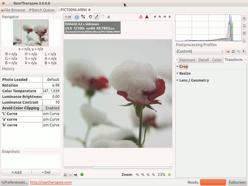

RawTherapee
Dieser Artikel wurde für die folgenden Ubuntu-Versionen getestet:
Ubuntu 16.04 Xenial Xerus
Ubuntu 14.04 Trusty Tahr
Zum Verständnis dieses Artikels sind folgende Seiten hilfreich:
RawTherapee  ist ein sehr mächtiger Open Source RAW-Konverter und verfügt über detaillierte Funktionen zur Bildbearbeitung. Der Umfang übersteigt die üblichen Funktionen von RAW-Konvertern deutlich. Das Programm ist für Linux, Windows und Mac OS X verfügbar.
ist ein sehr mächtiger Open Source RAW-Konverter und verfügt über detaillierte Funktionen zur Bildbearbeitung. Der Umfang übersteigt die üblichen Funktionen von RAW-Konvertern deutlich. Das Programm ist für Linux, Windows und Mac OS X verfügbar.
Die Entwicklung von RawTherapee wurde 2004 von Gábor Horváth begonnen. Im Januar 2010 entschied sich der Autor, den Quellcode unter der GPL Lizenz zu veröffentlicht, was dazu führte, dass nun weitere Entwickler zu dem Projekt beitragen. Die daraus entstandene stabile Version 3.0 wurde im Juli 2011 freigegeben und ersetzte die Version 2.4.1, die lediglich proprietär lizenziert war.
RawTherapee ist nicht der einzige RAW-Konverter unter Linux. Eine Übersicht liefert der Artikel RAW-Fotografie.
Funktionen¶
Unter anderem beinhaltet RawTherapee den Weiß- und Schwarzpunktabgleich auf RAW-Ebene, Kontrast pro Detailebene, pyramidale Rauschfilter oder die Festlegung der Ausgabe-Graduationskurve. Andererseits sucht man so manch gebräuchliche Funktion wie z.B. die gemeinsame Bearbeitung mehrerer Bilddateien auf einmal oder die selektive Bearbeitung (Bildausschnitte) vergebens.
Im Vergleich mit anderen Programmen dieser Gattung bietet RawTherapee die Algorithmen AMAZE, DCB und EAHD zur Entfernung statischer Bildfehler. Alle Verarbeitungsschritte werden bei vollem 16-Bit-Farbumfang durchgeführt, um eine maximale Qualität zu erzielen. Bei der Verarbeitung und Ausgabe der Bilder lassen sich eine Vielzahl von Optionen setzen.
Fast alle der herstellereigenen RAW-Bildformate werden unterstützt, wodurch RawTherapee mit nahezu allen üblichen Kameras kompatibel ist. Selbstverständlich stehen auch die Formate JPG (8-Bit), PNG (8- oder 16-Bit) und TIFF (8- oder 16-Bit) für Ein- sowie Ausgabe zur Verfügung.
Voraussetzungen¶
RawTherapee bietet einige Werkzeuge und Filter, die sehr viel Hauptspeicher beanspruchen. Speicherprobleme treten hauptsächlich bei Systemen mit weniger als 2 GiB RAM auf. Die Entwickler empfehlen daher 4 GiB RAM, was jedoch nicht bedeutet, dass RawTherapee mit 2 GiB Speicher instabil wäre. Außerdem ist eine moderne, leistungsstarke CPU empfehlenswert, und die Bildschirmauflösung sollte 1024x768 Bildpunkte oder mehr betragen. Man sollte auch die folgenden Punkte beachten, um Speicherprobleme zu vermeiden.
Hinweis:
Beispiel zur Speicherauslastung: Geladen wurde ein 8 MiB große CR2-Raw-Datei. Diese belegte nach dem Öffnen ca. 211 MiB RAM. Eine Konvertierung in eine JPEG-Datei belegte kurzfristig weitere 737 MiB RAM. Es sollte daher darauf geachtet werden, dass auf Systemen mit (relativ) wenig Speicher nicht zuviele Bilder auf einmal geöffnet werden, um Auslagern zu verhindern.
Installation¶
Die stabile Version 4.0 ist ab Ubuntu 12.10 in den offiziellen Paketquellen enthalten. Folgendes Paket muss installiert [1] werden:
rawtherapee (universe)
 mit apturl
mit apturl
Paketliste zum Kopieren:
sudo apt-get install rawtherapee
sudo aptitude install rawtherapee
PPA¶
Hinweis:
Falls RawTherapee bereits über die offiziellen Paketquellen installiert wurde, muss das Programm zuerst vollständig(!) deinstalliert werden, bevor man das PPA den eigenen Paketquellen hinzufügt.
Dariusz Duma stellt sein PPA als Paketquelle zur Verfügung [2]. In diesem PPA sind zahlreiche weitere Programme wie MacroFusion oder Luminance HDR enthalten, die sich mit dem Thema (RAW-)Fotografie und Bildbearbeitung unter Linux beschäftigen. Um Problemen mit den offiziellen Paketquellen vorzubeugen, wird empfohlen, das PPA nach der Installation wieder zu deaktivieren.
Adresszeile zum Hinzufügen des PPAs:
ppa:dhor/myway
Hinweis!
Zusätzliche Fremdquellen können das System gefährden.
Ein PPA unterstützt nicht zwangsläufig alle Ubuntu-Versionen. Weitere Informationen sind der  PPA-Beschreibung des Eigentümers/Teams dhor zu entnehmen.
PPA-Beschreibung des Eigentümers/Teams dhor zu entnehmen.
Damit Pakete aus dem PPA genutzt werden können, müssen die Paketquellen neu eingelesen werden.
Nach dem Aktualisieren der Paketquellen erfolgt die Installation wie oben angegeben.
Verwendung¶
Die Oberfläche ist aufgeräumt und ähnelt vergleichbaren Lösungen zur Konvertierung von RAW-Dateien. Wer in der Vergangenheit bereits mit einem RAW-Konverter gearbeitet hat, wird sich schnell zurechtfinden. Neu ist, dass Bilder in eigenen Reitern (Tabs) geöffnet werden. Prinzipiell werden immer zwei Reiter geöffnet: zum einen die Dateiverwaltung und zum anderen die Warteschlange.

Schön ist der in die Oberfläche integrierte Browser für die Bildvorschau. Ein Doppelklick  öffnet die entsprechende Datei in einem neuen Reiter, und man kann nun nach Herzenslust an den Einstellungen für das Foto schrauben. Alternativ kann das Programm auch beispielsweise in einen Bildbetrachter wie Geeqie integriert werden.
öffnet die entsprechende Datei in einem neuen Reiter, und man kann nun nach Herzenslust an den Einstellungen für das Foto schrauben. Alternativ kann das Programm auch beispielsweise in einen Bildbetrachter wie Geeqie integriert werden.
Die große Vielfalt an Bearbeitungsmöglichkeiten braucht sich keineswegs hinter der kommerzieller Produkte zu verstecken. Belichtungskorrektur, Weißabgleich, Komprimieren von Schatten und Lichtern, Farbkorrekturen, Entrauschen, Nachschärfen und vieles mehr sind vorhanden. Beschneiden, Drehen, Verzerrungen korrigieren und Konvertieren der Fotos sind ebenfalls sehr leicht und intuitiv erledigt. Hat man sämtliche Einstellungen vorgenommen und ist mit dem Ergebnis zufrieden, dann lässt sich die erarbeitete Einstellung als Profil speichern; dieses ist dann auf weitere Fotos mit einem Mausklick anwendbar.
Sehr gelungen ist vor allem, dass das Programm zum Spielen einlädt. Sehr leicht lässt sich ein Lesezeichen (Bookmark) anlegen, um weiter mit den Einstellungen zu experimentieren. “Verdirbt” man dann das Foto, springt man damit einfach wieder zurück.
Übersicht einiger Möglichkeiten¶
Vorsortieren der Rohdatenbilder in der Dateiverwaltung (direkt in den Papierkorb, Bewertungen mit Sternchen, dann ggf. löschen der weniger gelungenen Aufnahmen)
Korrektur von Lichtspitzen (Lichter wieder herstellen), allgemeiner: Belichtungsptimierung
Änderung des Weissabgleiches
Schärfen und evtl Entrauschen
Zuschneiden aus den Rohdaten
Exportieren als JPG auch als Stapelverarbeitung.
Einstellungen¶
Konfigurationsdaten werden in den folgenden Ordnern gespeichert:
RawTherapee 4.x:
~/.config/RawTherapee4/
~/.cache/RawTherapee4/
RawTherapee 3.x:
~/.config/RawTherapee3.0.1/
~/.cache/RawTherapee3.0.1/
Zusätzlich wird für jedes bearbeitete Bild eine Textdatei mit dem gleichen Dateinamen, aber dem Zusatz .pp3 (.pp2 bei RawTherapee 2.x) angelegt. Diese Dateien zeigen an, ob ein Bild bereits mit RawTherapee bearbeitet wurde, erkennbar am grünen Haken in der Bildvorschau der Dateiverwaltung.
Links¶
Benutzerhandbücher
in verschiedenen Sprachen und FormatenQuelltext auf GitHub
RawTherapee - Wikipedia
RawTherapee 2.4.1 und RawTherapee 3.0 in den Bildbetrachter Geeqie einbinden (Forenbeiträge)
- Erstellt mit Inyoka
-
 2004 – 2017 ubuntuusers.de • Einige Rechte vorbehalten
2004 – 2017 ubuntuusers.de • Einige Rechte vorbehalten
Lizenz • Kontakt • Datenschutz • Impressum • Serverstatus -
Serverhousing gespendet von